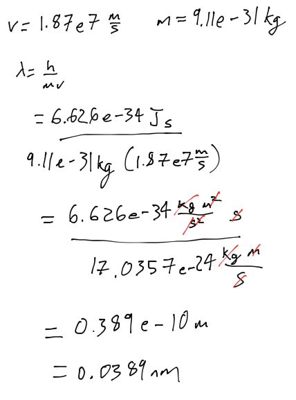
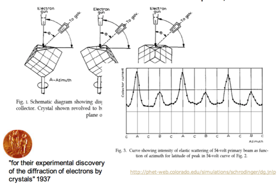
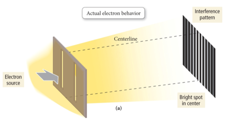
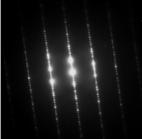
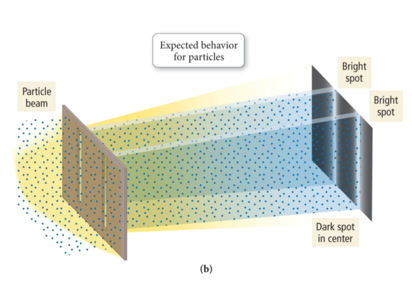
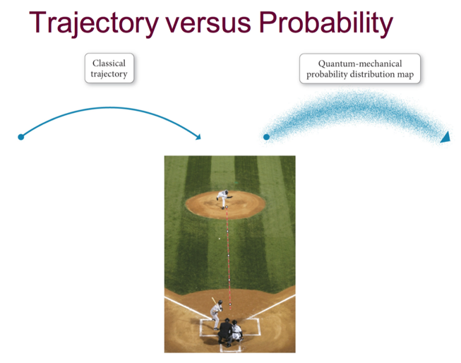
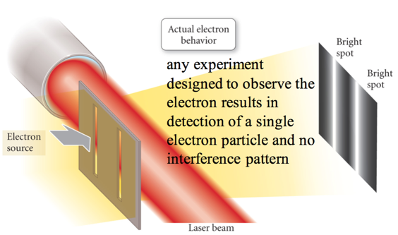
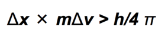
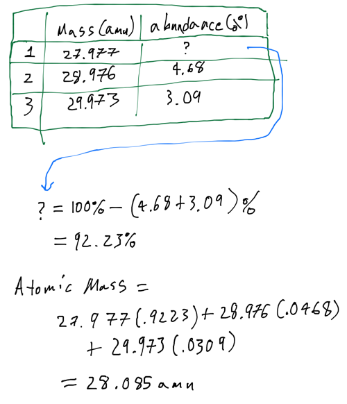
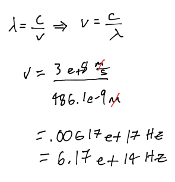

Week 4 - Day 1
Navigate using audio
Last lecture before test 1!
Announcements
- Test tonight
- Only like 20 Questions
- Pencil, eraser, photo-ID
- Audio 0:00:31.902459
- No, no, no phones
- You should know all the prefixes
- how many ml in a liter
- Any imperial to metric will be given
- 12 in to a foot and 3 ft to a yard
Clicker Question
- Find wavelength of electron with velocity of 1.8710^7 m/s and mass of 9.1110^-31 kg
- Audio 0:10:28.871589
- .0388 nm
- 
Wave Nature of Particles
- Audio 0:15:57.282705
- 
Electron Diffraction
- Audio 0:19:15.239273
- 
- Transmission Electron Microscope
- 
- If electrons behave only like particles, there should be only two bright spots on the target.
- 
Trajectory Vs Probability
- Audio 0:21:20.562074
- 
- If you know the forces acting on an object with classical trajectory, you can tell exactly where it will land
- With electrons, you can only know with a degree of certainty where it will be
Uncertainty Principle Demonstration
- 
Heisenberg’s Uncertainty Principle
- Heisenberg stated that the product of the uncertainties in both the position and speed of a particle was inversely proportional to its mass.
- x = position, Δx = uncertainty in position
- v= velocity, Δv = uncertainty in velocity
- m=mass
- 
-
This means that the more accurately you know the position of a small particle, such as an electron, the less you know about its speed, and vice versa.
- Stopped short for practice questions
Q1
- An element has three stable isotopes with masses of 27.977 amu, 28.976 amu, and 29.973 amu. The heavier two isotopes have an abundance of 4.68 % and 3.09 %. What is the atomic mass of the element?
- 
Q2
- Rank in order of increasing mass
- proton < neutron < electron
- proton < electron < neutron
- electron < neutron < proton
- electron < proton < neutron
(answer is C)
Q3
- How many protons, neutrons, and electrons are in isotope ^65_28X
- 36 neutrons, 29 protons, and 29 electrons
Q4
When waves of equal amplitude from two sources are in phase when they interact, it is called => constructive interference
Q5
What is the frequency of an electron with wavelength 486.1 nm? + 